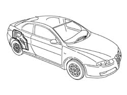
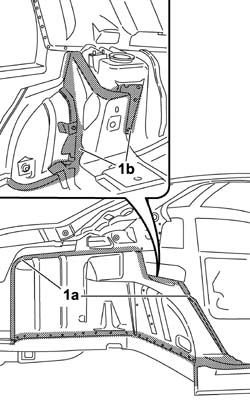
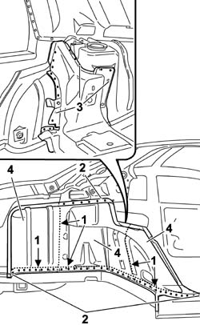
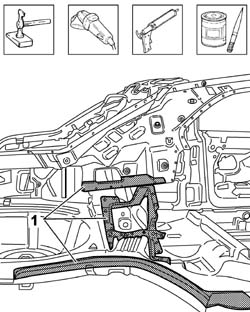
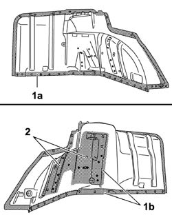
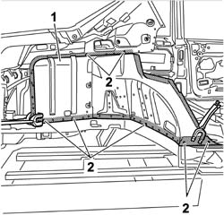
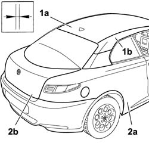
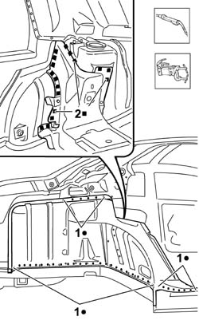
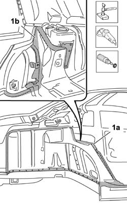
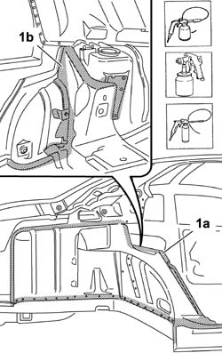

7210B40 REAR INNER WHEEL ARCH
- Path
- Procedures > 72 PANELS AND FRAME > 7210 REMOVING REFITTING > 7210B STRUCTURE ELEMENTS-CENTRAL AND REAR PART > 7210B40 REAR INNER WHEEL ARCH
- Kind
- repair procedure (removal / refitting; the operation number is the code)
- Applies to
- all engines; all production periods
- Interactive page
- https://sloeber94.github.io/elrnDB-aGt/en/#/125002041
Applies to: all engines; all production periods
 Removing
Removing
 Refitting
Refitting- Op. 7210E56 TAIL-GATE
- Op. 7210E28 ROOF PANEL
- Op. 7210E34 ROOF PANEL/SIDE PANEL CONNECTION PROFILE-MOULDING
- Op. 7210E52 REAR WING (1), LH OR RH
- Op. 7210B10 TAIL LIGHT SEAT
- Op. 7210B45 REAR WING REINFORCEMENT
- Check that the components connected are not distorted by checking the bodyshell alignment measurements using suitable equipment (gauges, templates or jigs).
- Straighten the body as necessary.

Applies to: all engines; all production periods
- Use the rotary brush to clean the edges of the panel to highlight the spot welds on the outer side (1a) and on the inner side (1b) of the vehicle.

Applies to: all engines; all production periods
1. Use the hack sawing machine following the cutting line illustrated.
2. Use the chamfering machine on the spot welds shown.
3. Use the drill and chamfer the spot welds in the area shown in the diagram.
- Use the hammer and chisel to remove the spot welds chamfered previously.
4. Remove the edges of the rear inner wheel arch.

Applies to: all engines; all production periods
- Straighten the edges of the panel using a hammer and dolly block.
- Remove the spot weld residues using a disc grinder.
- Use a rotary brush and clean the areas treated previously.
- Apply electro-galvanizing paint.

Applies to: all engines; all production periods
- Work with the replacement part at the bench and remove the anti-corrosion treatment from the entire perimeter of the outer part (1a) and the inner part (1b) using a rotary brush.
- Drill the replacement part, using a drill, from the inside at the points shown in the diagram.
- Apply the electro-galvanizing paint to the edges treated previously.

Applies to: all engines; all production periods
Refitting
Removing- Position the wing frame and the centre pillar.
1. Position the rear inner wheel arch correctly on the vehicle using self-locking clamps.
- Check that the alignment is perfect.
- Fit the roof (1a) and the roof connector (1b).
- Position the right rear wing (2a) and position the tailgate (2b), then check the alignment and the surrounding gaps.
- Remove the components fitted previously.
2. Tack the replacement part by making several spot welds.


Applies to: all engines; all production periods
- Use a spot welder and carry out the welding in the areas shown in the diagram.
- Use a MIG welder and fill the openings made previously.

Applies to: all engines; all production periods
- Correct any distortions to the panel using a hammer and dolly block.
- Use a disc grinder to level the welds working on the outside (1a) and the inside (1b) of the rear wheel arch.
- Use a rotary brush and clean the areas welded previously.

Applies to: all engines; all production periods
- Apply the anti-oxidant protection to the areas involved in the welding working on the outside (1a) and the inside (1b).
- Proceed with the painting stage.
- Apply the wax-based oil protection to the inside of the wheel arch.

Applies to: all engines; all production periods